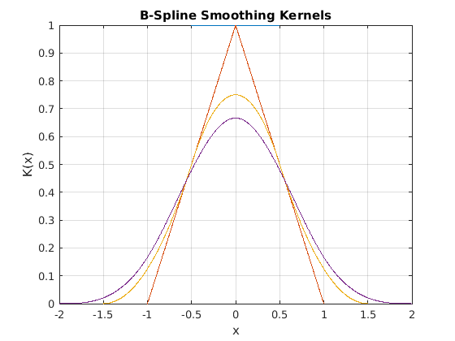
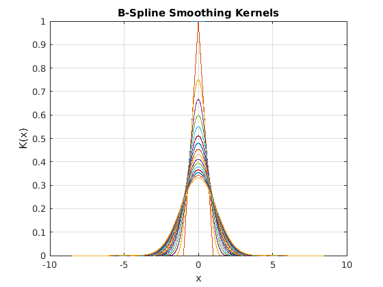
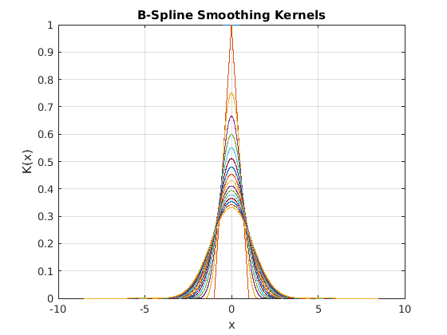

Contents
Epanechnikov Efficency for B-Splines
Author: Jakob Ameres jakobameres.com
Calculate the Epanechnikov efficiency for B-Splines of different degree B-Splines are often used as smoothing kernels in Particle in Cell codes
More about the efficency of smoothing kernels: Density estimation for statistics and data analysis by Silverman, Bernard W., 1986, CRC press
degree=1:20; %For deg 1 to 20 % Preallocate arrays bspline_eff=zeros(length(degree),1); k1=zeros(length(degree),1); k2=zeros(length(degree),1); figure('Name','B-Spline Smoothing Kernels'); for deg=degree
%Construct spline of degree (deg) knots=linspace(-(deg)/2,(deg)/2,deg+1); %Knot sequence bpp=bspline(knots);
Smoothing Kernels
x=linspace(knots(1),knots(end),1e3); plot(x,ppval(bpp,x)); hold on; grid on; xlabel('x'); ylabel('K(x)'); title('B-Spline Smoothing Kernels'); % $p(x)=x$ in in piecwise polynomial form coefs=[ones(1,length(knots)-1); knots(1:end-1)].'; ppx=mkpp(knots,coefs); % $p(x)=x^2$ in piecwise polynomial form ppx2=fncmb(ppx,'*',ppx); %evaluate integrals part1=fncmb(bpp,'*',ppx2); part2=fncmb(bpp,'*',bpp); intpart1=fnint(part1); intpart2=fnint(part2);
 
 Efficiency as defined by Silverman
%algebraic calculation on the polynom
k2(deg)=diff(ppval(intpart1,knots([1, end])));
k1(deg)=diff(ppval(intpart2,knots([1, end])));
bspline_eff(deg)=3/(5*sqrt(5))/sqrt(k2(deg))./k1(deg);
end
Result
lw=2; fontsz=12; figure('Name','B-Spline Smoothing Kernel Efficiency',... 'NumberTitle','off'); plot(degree, real(bspline_eff),'b','Linewidth',lw); hold on; plot(degree, real(bspline_eff),... 'b*','Linewidth',lw,'MarkerSize',12) title('B-Spline Smoothing Kernel Efficiency') xlabel('B-Spline degree') ylabel('stochastic efficiency (Epanechnikov)'); grid on; axis([1 length(degree) -inf 1]) set(gca,'FontSize',fontsz,'YTick', 0.92:0.01:1,... 'XTick', [1:3, 4:2:length(bspline_eff)]);